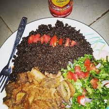
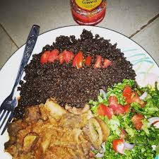
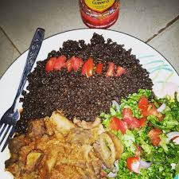

Tubani also referred to as 'steamed black-eyed peas' pudding is a popular Ghanaian dish that is commonly eaten in the Northern Regions and Zongo of Ghana.
The dish consists of a paste made from the flour of black-eyed peas and water which is then cooked after being first wrapped in the sweet-tasting, aromatic leaves of the Marantaceous herb Thaumatococcus daniellii and served with gravy or pepper and sliced onions tossed in hot vegetable oil
Ingredients:
beans flour
water
salt
saltpeter
banana leaves
Steps:
Mix the beans flour with water in a bowl and beat the mixture in circular motion until it becomes fluffy
Put some water in a saucepan and leave it on fire to boil
Wash Thaumatococcus daniellii leaves or banana leaves or corn husk
Place some of the leaves in the sauce pan on fire to form a base
Serve small portions of the fluffy black eyed pea flour mixture in the leaves and wrap
Put the wrapped mixture in the boiling water on fire and allow it to cook for sometime
Use some of the leaves to cover the top of the water in the saucepan
Cover and steam the content of the saucepan for about two hours
Wasawasa

Wasawasa is a popular dish, eaten in Dagbon and other parts of Northern Ghana. It is also eaten in some West African countries, such as Burkina Faso. It is made from dried yam peelings called jaling, which have been grounded into flour and steamed. Wasawasa is mostly eaten with spicy sauces and sometimes garnished with vegetables, accompanied with shea butter or raw groundnut oil and fried fish. Wasawasa is sometimes served with beans, pasta, and salad.
Ingredients for preparation of Wasawasa
Yam flour
Salt
freshly grinded pepper
water
onions
goundnuts and shearbutter oil
Steps in involved in preparation of Wasawasa
Fetch the yam flour into a pan
Add a little amount water into the content
Mix the content with water with hands until you get an even balls
Put the mixture into a seive
Heat water in another pan
Place the pan with the mixture on the pan with hot water
Keep the pan with hot water on fire and the pan with the mixture on the pan with hot water
Make sure the pan with the mixture is completely covered with a rubber, such that the vapour does not escape
Keep the setup until it is completely cooked
When the mixture turn blackish, it is cooked
Serve the cooked Wasawasa in a plate and garnish it with oil, salt, pepper, onions, tomatoes, beans,cabbage
Waakye
Waakye is a Ghanaian dish of cooked rice and beans, commonly eaten for breakfast or lunch. However, others eat it for supper. The rice and beans, usually black eyed peas or cow beans, are cooked together, along with red dried sorghum leaf sheaths or stalks and limestone. The sorghum leaves and limestone give the dish its characteristic flavor and a red appearance and the sorghum is taken out before consumption. The word waakye is from the Nigerian Hausa language and means beans. It is the contracted form of the full name shinkafa da wake which means rice and beans
Ingredients for Preparation of Waakye
Rice
Beans
saltpeter
Salt
Water
Millet or Beans leaves
Steps Involved in Preparation of Waakye
Fetch a proportionate quantity of beans and wash
Fetch a proportionate quantity of water into a cooking pan or pot and place it on fire
Pour the washed beans into the pot/pan on fire
Add saltpeter to the mixture
Wait till the beans is half cooked or nearly cooked
Add the rice to the beans
Add salt to the mixture and stir
Wait until the mixtureis fully cooked
Serve Waakye with stew and shito, salad, carrots, spaghetti garnish it
.jpeg)
.jpeg)
.jpeg)
.jpeg)
.jpeg) 

.jpeg)
.jpeg)
.jpeg)
.jpeg)
.jpeg)
.jpeg)